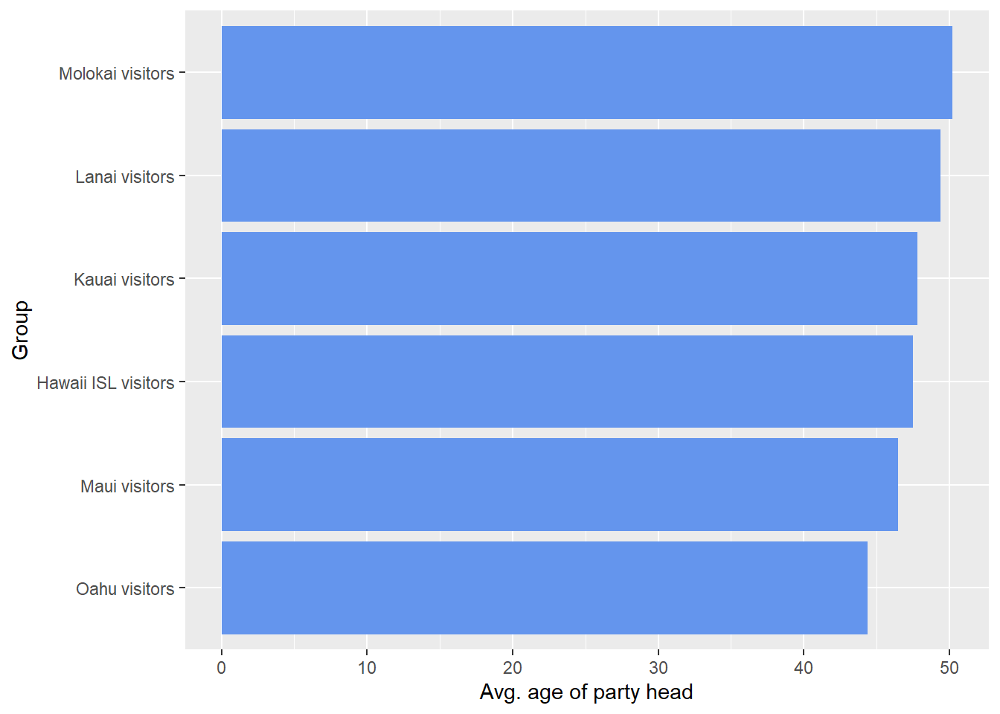
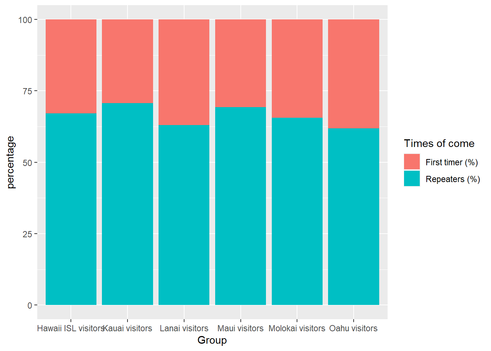
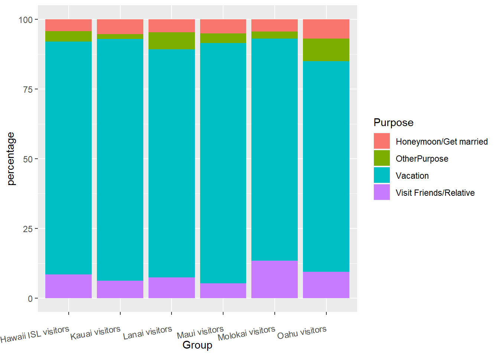
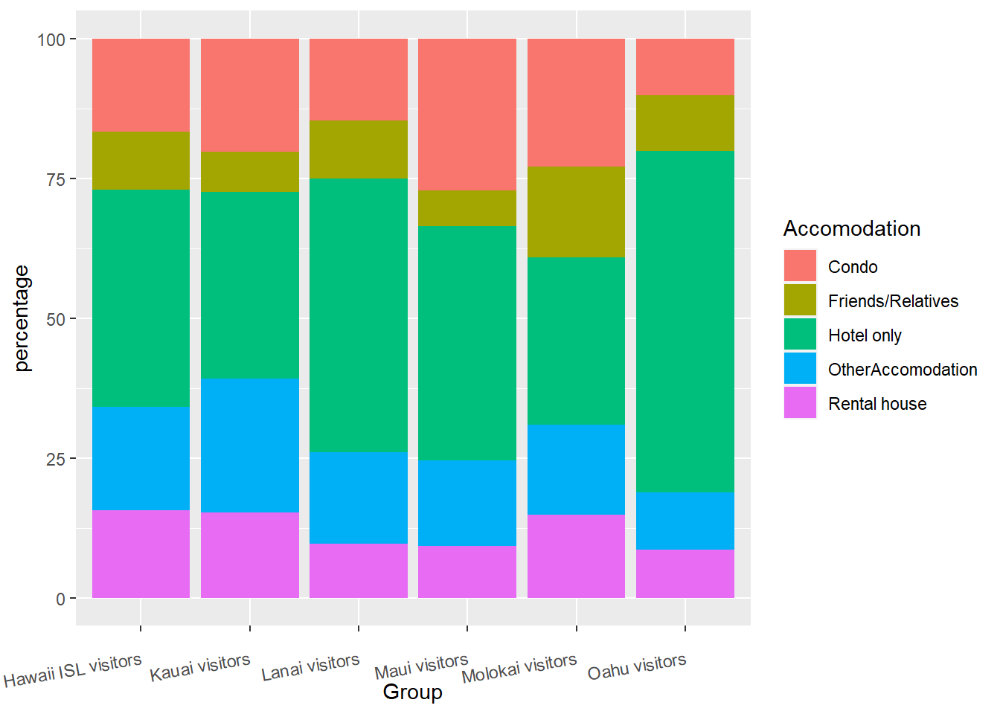

Chapter 1 Results
V. Results You have a lot of freedom to choose what to do, as long as you restrict yourselves to exploratory techniques (rather than modeling / prediction approaches). In addition, your analysis must be clearly documented and reproducible.
Provide a short nontechnical summary of the most revealing findings of your analysis written for a nontechnical audience. Take extra care to clean up your graphs, ensuring that best practices for presentation are followed, as described in the audience ready style section below.
Use subheadings as appropriate. See Todd Schneider’s blog posts for examples of thoughtful, informative subheadings.
The number of graphs will vary by project; we suggest a target of 10. (A plot with multiple facets counts as 1 graph). If you go over, make sure they are high quality and include commentary. A project with 10 good graphs plus commentary will receive a better grade than a project with 10 good graphs and 10 mediocre ones.
# from chapter 2&3
data1.0 <- read.csv("1 visitor trend-不分state.csv")[-c(7:11),]
data2.0 <- read.csv("2 visitor trend-分state.csv")[-c(301:305),]
data2.10<- read.csv("2.1 visitor trend- state plus dest.csv")[-c(1051:1054),]
data3.0 <- read.csv("3 destination.csv")[-c(29:32),]
data4.0 <- read.csv("4 Q2主要数据.csv")[-c(217:221),]
library(tidyverse)## Warning: 程辑包'tidyverse'是用R版本4.1.2 来建造的## -- Attaching packages --------------------------------------- tidyverse 1.3.1 --## v ggplot2 3.3.5 v purrr 0.3.4
## v tibble 3.1.6 v dplyr 1.0.8
## v tidyr 1.2.0 v stringr 1.4.0
## v readr 2.1.2 v forcats 0.5.1## Warning: 程辑包'ggplot2'是用R版本4.1.2 来建造的## Warning: 程辑包'tibble'是用R版本4.1.2 来建造的## Warning: 程辑包'tidyr'是用R版本4.1.2 来建造的## Warning: 程辑包'readr'是用R版本4.1.2 来建造的## Warning: 程辑包'purrr'是用R版本4.1.2 来建造的## Warning: 程辑包'dplyr'是用R版本4.1.2 来建造的## Warning: 程辑包'stringr'是用R版本4.1.2 来建造的## Warning: 程辑包'forcats'是用R版本4.1.2 来建造的## -- Conflicts ------------------------------------------ tidyverse_conflicts() --
## x dplyr::filter() masks stats::filter()
## x dplyr::lag() masks stats::lag()library(dplyr)
empty_as_na <- function(x){
if("factor" %in% class(x)) x <- as.character(x) ## since ifelse wont work with factors
#ifelse(as.character(x)!="", x, NA)
ifelse(x!="", x, NA)
}
data1<- data1.0 %>%
mutate_each(funs(empty_as_na)) %>%
pivot_longer(cols = -c("Market", "Indicator", "Units", "Destination"),
names_to = "Year",
values_to = "number") %>%
mutate(Year = substr(Year, 2, 1000)) %>%
pivot_wider(names_from = "Year",
values_from = "number")## Warning: `funs()` was deprecated in dplyr 0.8.0.
## Please use a list of either functions or lambdas:
##
## # Simple named list:
## list(mean = mean, median = median)
##
## # Auto named with `tibble::lst()`:
## tibble::lst(mean, median)
##
## # Using lambdas
## list(~ mean(., trim = .2), ~ median(., na.rm = TRUE))
## This warning is displayed once every 8 hours.
## Call `lifecycle::last_lifecycle_warnings()` to see where this warning was generated.## Warning: `mutate_each_()` was deprecated in dplyr 0.7.0.
## Please use `across()` instead.
## This warning is displayed once every 8 hours.
## Call `lifecycle::last_lifecycle_warnings()` to see where this warning was generated.data2<- data2.0 %>%
mutate_each(funs(empty_as_na)) %>%
pivot_longer(cols = -c("Market", "Indicator", "Units", "Destination"),
names_to = "Year",
values_to = "number") %>%
mutate(Year = substr(Year, 2, 1000)) %>%
pivot_wider(names_from = "Year",
values_from = "number")
data2.1<- data2.10 %>%
mutate_each(funs(empty_as_na)) %>%
pivot_longer(cols = -c("Market", "Indicator", "Units", "Destination"),
names_to = "Year",
values_to = "number") %>%
mutate(Year = substr(Year, 2, 1000)) %>%
pivot_wider(names_from = "Year",
values_from = "number")
data3<- data3.0 %>%
mutate_each(funs(empty_as_na)) %>%
pivot_longer(cols = -c("Market", "Indicator", "Units", "Destination"),
names_to = "Year",
values_to = "number") %>%
mutate(Year = substr(Year, 2, 1000)) %>%
pivot_wider(names_from = "Year",
values_from = "number")
data4<- data4.0 %>%
pivot_longer(cols = -c("Group", "Indicator", "Units"),
names_to = "Year",
values_to = "number") %>%
mutate(Year = substr(Year, 2, 1000)) %>%
pivot_wider(names_from = "Year",
values_from = "number")
d1<- tibble(data1[,-c(5:21)][,-c(3)][,c(1,2,3,8)])
d2<- tibble(data2[,-c(5:21)])
d2.1<- tibble(data2.1)[,-c(5:21)][,c(1,2,3,4,8)]
d4<- tibble(data4.0[,-c(4:19)][,c(1, 2, 8)])d4.1<- d4 %>%
filter(Group != "Visitor from US") %>%
na.omit() %>%
pivot_wider(names_from = Indicator, values_from = X2019)
d4.1 %>%
mutate(Group = factor(Group, levels = c("Oahu visitors",
"Maui visitors",
"Hawaii ISL visitors",
"Kauai visitors",
"Lanai visitors",
"Molokai visitors"))) %>%
ggplot(aes(x = Group, y = `Avg. age of party head`)) +
geom_col(fill = "cornflowerblue") +
coord_flip() 
d4.1[,c(1,3,4)] %>%
pivot_longer(c(`First timer (%)`, `Repeaters (%)`),
names_to ="Times of come",
values_to = "percentage") %>%
ggplot(aes(x = Group, y = percentage, fill = `Times of come`)) +
geom_col() 
purpose<- cbind(d4.1[,c(1)], d4.1[c(grep("Purpose",colnames(d4.1)))])%>%
pivot_longer(c(2:16),
names_to ="Purpose",
values_to = "percentage") %>%
mutate(Purpose = substr(Purpose, 10, 1000)) %>%
mutate(Purpose = gsub('.{4}$', '', Purpose)) %>%
filter(Purpose %in% c("Vacation", "Honeymoon/Get married", "Visit Friends/Relative")) %>%
pivot_wider(names_from = Purpose,
values_from = percentage) %>%
mutate(OtherPurpose = 100 - Vacation - `Honeymoon/Get married` - `Visit Friends/Relative`) %>%
pivot_longer(c(2:5),
names_to = "Purpose",
values_to = "percentage")
purpose %>%
ggplot(aes(x = Group, y = percentage, fill = Purpose)) +
geom_col() +
theme(axis.text.x = element_text(angle = 10, vjust = 0.5, hjust=1))
Accom<- cbind(d4.1[,c(1)], d4.1[c(grep("Accom",colnames(d4.1)))]) %>%
pivot_longer(c(2:14),
names_to ="Accomodation",
values_to = "percentage") %>%
mutate(Accomodation = substr(Accomodation, 8, 1000)) %>%
mutate(Accomodation = gsub('.{4}$', '', Accomodation)) %>%
filter(Accomodation %in% c("Hotel only", "Condo", "Friends/Relatives", "Rental house")) %>%
pivot_wider(names_from = Accomodation,
values_from = percentage) %>%
mutate(OtherAccomodation = 100 - `Hotel only` - `Condo` - `Friends/Relatives` - `Rental house`) %>%
pivot_longer(c(2:6),
names_to = "Accomodation",
values_to = "percentage")
Accom %>%
ggplot(aes(x = Group, y = percentage, fill = Accomodation)) +
geom_col() +
theme(axis.text.x = element_text(angle = 10, vjust = 0.5, hjust=1))
library(treemap)## Warning: 程辑包'treemap'是用R版本4.1.2 来建造的d3<- tibble(data3[,-c(5:29)][,c(1,2,3,4,9)])
colnames(d3)[5] <- 'Year_2019'
d3$Year_2019<- as.numeric(gsub(",","", d3$Year_2019))
d3 %>%
filter(Indicator == "Visitor arrivals") %>%
select( -c(Market, Units)) %>%
treemap::treemap(index=c("Destination"),
vSize="Year_2019",
vColor="Year_2019",
type="value",
title="Number of visitors to different islands",
format.legend = list(scientific = FALSE, big.mark = " ")) 
d3 %>%
filter(Indicator == "Length of stay") %>%
select( -c(Market, Units)) %>%
treemap::treemap(index=c("Destination"),
vSize="Year_2019",
vColor="Year_2019",
type="value",
title="Length of stay for visitors to different islands",
format.legend = list(scientific = FALSE, big.mark = " "))